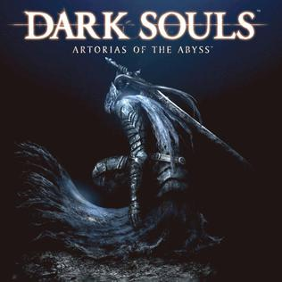

Inicio
Dark Souls (ダークソウル Dāku Sōru?) é um jogo eletrônico de RPG de ação desenvolvido pela FromSoftware e publicado pela Namco Bandai Games. Lançado originalmente em setembro de 2011 para PlayStation 3 e Xbox 360, é um sucessor espiritual de Demon's Souls e a segundo título da série Souls. Dark Souls se passa no reino fictício de Lordran, onde os jogadores assumem o papel de um personagem morto-vivo amaldiçoado que inicia uma peregrinação para descobrir o destino de sua espécie. Um relançamento para Microsoft Windows foi realizado em agosto de 2012, com conteúdos adicionais não presentes em suas versões originais. Em outubro de 2012, um novo conteúdo para download foi disponibilizado para a versão de consoles, sob o subtítulo Artorias of the Abyss. Dark Souls recebeu aclamação da crítica, com muitos citando-o como um dos melhores jogos de todos os tempos. Os críticos elogiaram a profundidade de seu combate e level design. No entanto, a dificuldade do jogo recebeu críticas mistas, com alguns criticando-o por ser implacável demais. A versão original do jogo para Windows foi menos bem recebida, com críticas direcionadas a vários problemas técnicos. Em abril de 2013, o jogo havia vendido mais de dois milhões de cópias em todo o mundo. Duas sequências, Dark Souls II e Dark Souls III, foram lançadas em meados da década de 2010, enquanto uma versão remasterizada, Dark Souls: Remastered, foi lançada em 2018.

História
Dark Souls se passa primariamente no reino fictício de Lordran, onde os jogadores assumem o papel de um personagem denominado "Chosen Undead" que, segundo lendas, seria responsável pela quebra de uma maldição que torna incapazes de morrer aqueles que são afligidos por uma misteriosa marca negra. O jogo é inspirado fortemente pela temática medieval, com a presença de deuses e seres fantásticos, inseridos em um mundo decadente e punitivo. A estrutura de apresentação da história é subjetiva, dando-se basicamente através da descrição de itens ou em interações com NPCs, possibilitando margem para diversas interpretações acerca de toda a mitologia presente no jogo.
Expansão
Artorias of the Abyss se passa cem anos antes dos eventos de Dark Almas. O jogador é levado de volta ao passado por um humano primitivo conhecido como Manus, Pai do Abismo, que ressuscitou e foi torturado pelos feiticeiros de Oolacile um século antes, na esperança de desbloquear seu poder escuro. O poder de Manus enlouqueceu e criou o Abismo, um vazio escuro que ameaça engolir toda a Oolacile. Anor Londo enviou Cavaleiro Artorias para matar Manus, mas ele foi incapaz de resistir ao escuro ataque violento devido à sua falta de Humanidade e tornou-se possuído, apenas capaz de salvar seu companheiro lobo, Sif. O jogador, por sua A humanidade é mais capaz de lutar contra a escuridão e deve derrotar os Artorias possuídos. Eles devem então descer por Oolacile Township e no Chasm of the Abyss, onde eles enfrentam Manus e resgatar governante da terra, Princesa Crepúsculo. Uma luta adicional opcional envolve derrotar o dragão negro Kalameet que é ameaçador Oolacile, com a ajuda de Hawkeye Gough, um arqueiro gigante que foi um dos Quatro Cavaleiros de Gwyn.
